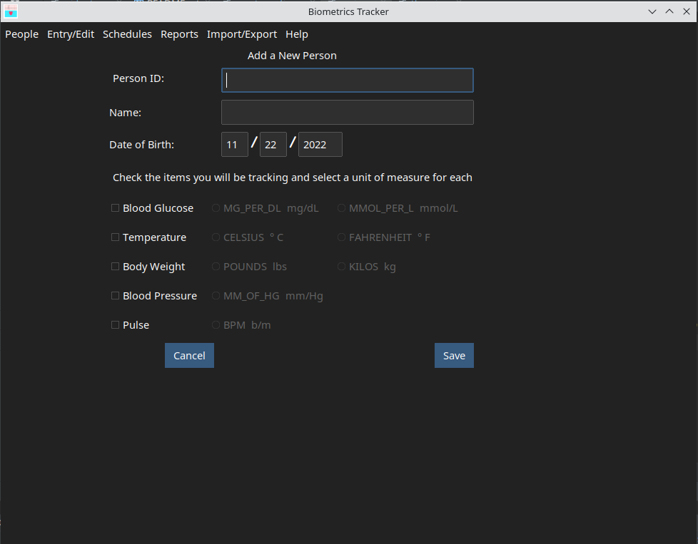

Data points recorded by the application are associated with a person. For each person, a bit of data must be entered. The ID may be letters, numbers or any combination thereof. Each person must have a unique ID. The values entered to the and will be printed in the page heading of reports. The date of birth is included because most doctor's offices use that date in combination with the name to identify a person.
In addition to the ID, name and date of birth, you must select which metrics will be recorded for a person, and which unit of measure will be used in the measurement. Prompts and report column heading will shown only for the selected metric types.
The unit of measure radio buttons will be disabled for metrics that haven't been selected for recording. To select a metric type, click the checkbox at the left side of the GUI and select a unit of measure. Click the button to save the person's information, or click the button to exit without saving the information.